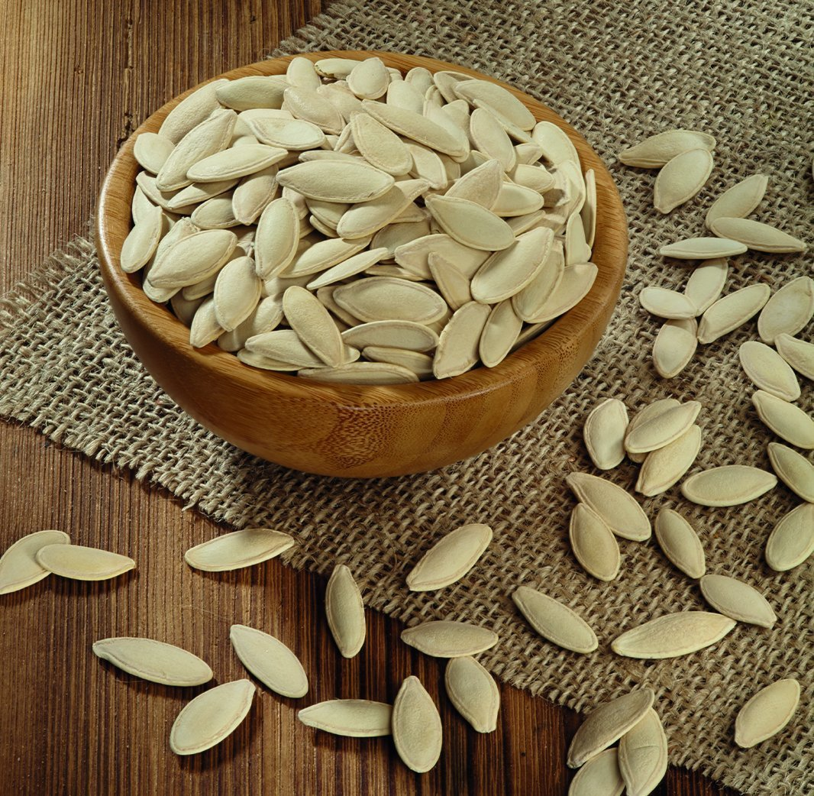

Mükemmel bir kurt ilacıdır. Çocuklara 10-15, büyüklere 20-30 kabak çekirdeği verilir. Çekirdek kabuğu ile beraber çok iyi çiğnenmelidir. Tenya solucanları için de kabak çekirdeği en iyisidir. Sıkı bir perhiz ile 80-100 kabak çekirdeği kabuğu ile birlikte, dört öğünde iyice çiğnenerek yenir. Bir saat sonra yarım kaşık Hintyağı içilir.
